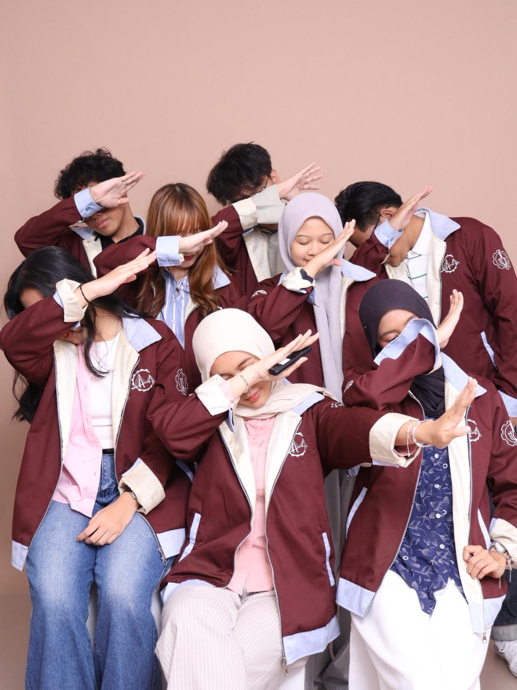
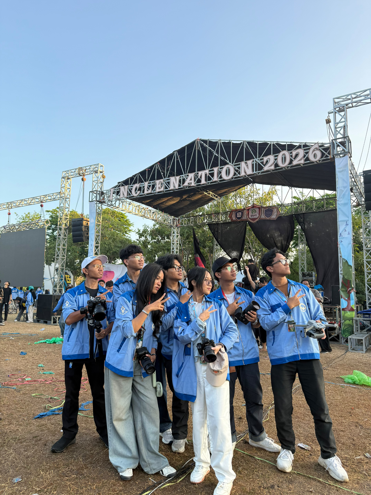
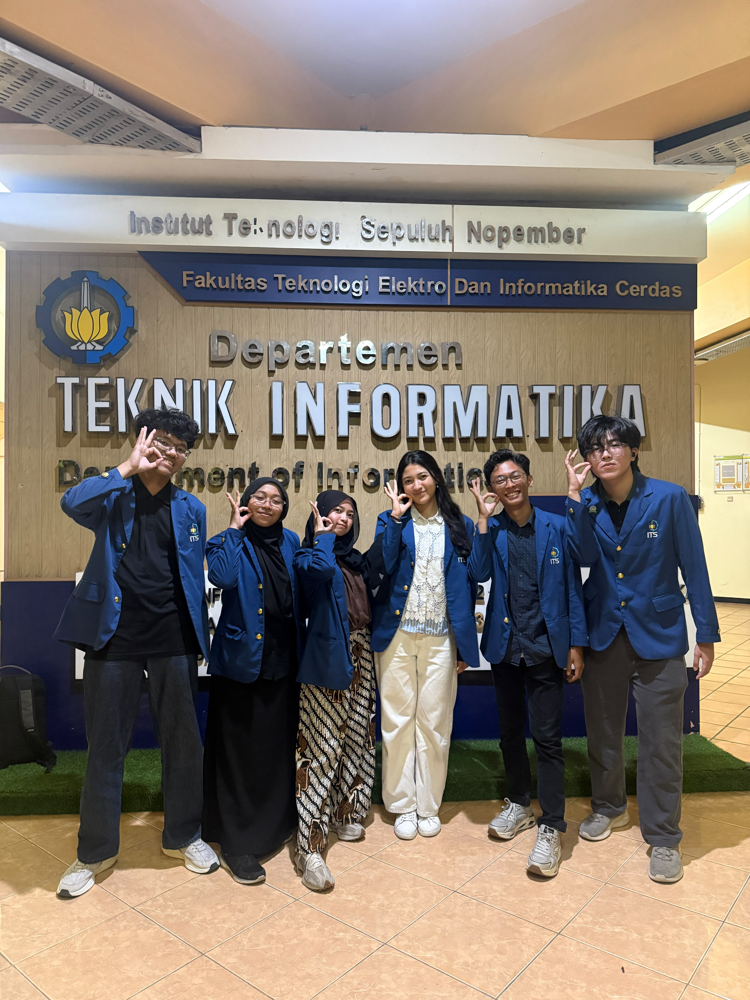
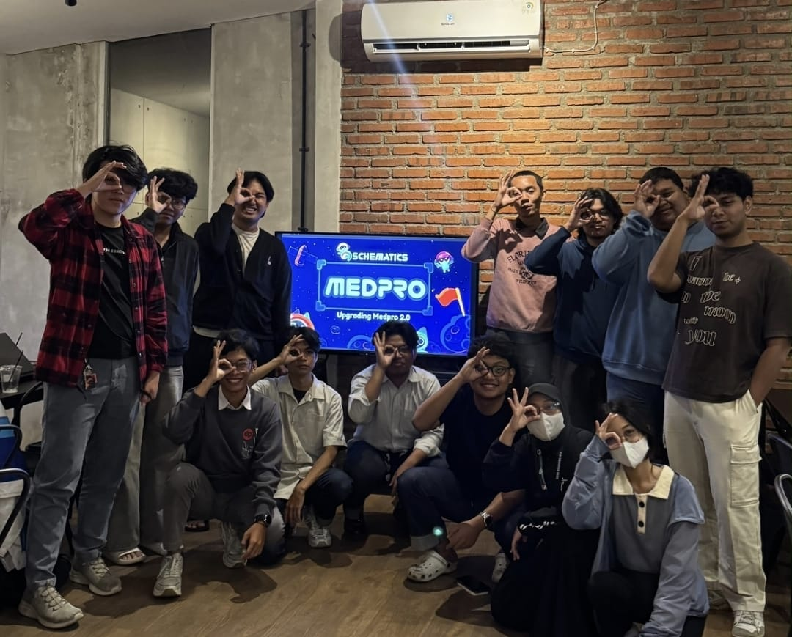
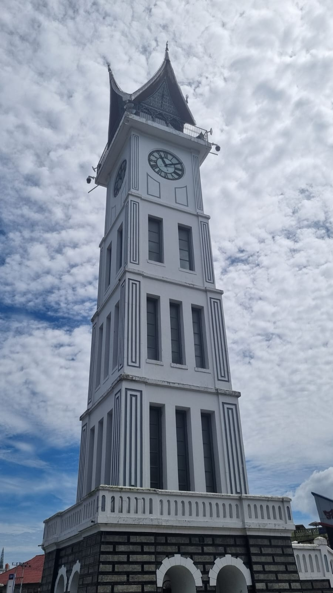
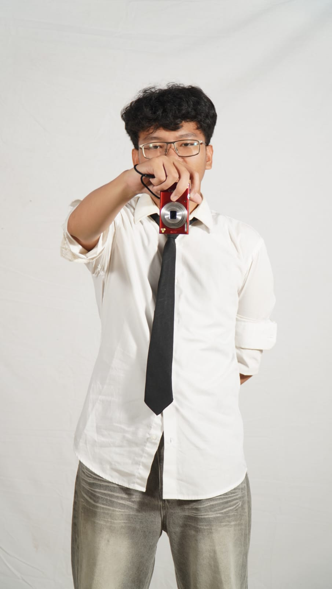

Mahasiswa Institut Teknologi Sepuluh Nopember pada jurusan Teknik Informatika yang kebetulan berasal dari Kota Batam dan memiliki minat tinggi pada bidang Media Production dan Video-Editing, akan selalu belajar dalam melakukan improvement guna menambah pengalaman dan skill pada bidang ini.

Forum Daerah mahasiswa Institut Teknologi Sepuluh Nopember (ITS) berbasis di Kota Batam. Komunitas ini aktif dalam mengenalkan ITS dan membantu calon mahasiswa baru melalui rangkaian acara seperti "Ini Lho ITS! 2026" dan "Try Out Sepuluh Nopember"

Serangkaian acara penyambutan Mahasiswa Baru 2026 Institut Teknologi Sepuluh Nopember (ITS) yang diselenggarakan oleh Badan Eksekutif Mahasiswa Fakultas Teknologi Elektro dan Informatika Cerdas (BEM FTEIC) upaya mengenalkan fakultas FTEIC kepada Mahasiswa Baru. Event ini berbasis tahunan.

Kegiatan penyambutan Mahasiswa Baru 2026 Institut Teknologi Sepuluh Nopember (ITS) pada Departemen Teknik Informatika upaya mengenalkan departemen Teknik Informatika kepada Mahasiswa Baru.

Event yang diselenggarakan oleh Departemen Teknik Informatika, Institut Teknologi Sepuluh Nopember (ITS). Berupa kompetisi pemrograman, kompetisi logika, hingga seminar. Event ini berbasis tahunan.

